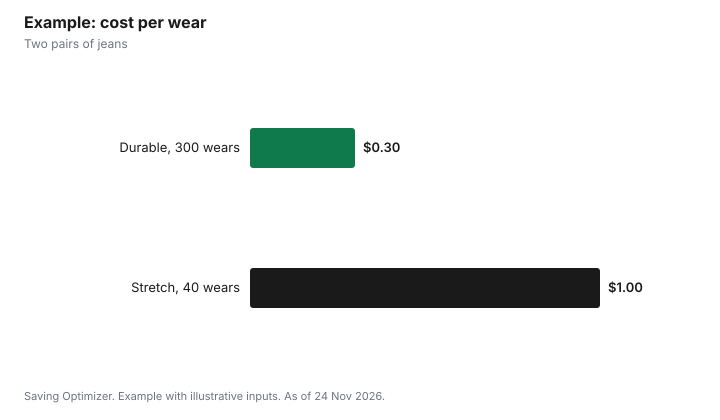

Clothing · Canada
Jeans That Last: Denim Fabric, Fit and Care for Cost Per Wear

Jeans that last usually have heavier fabric and little stretch, fit well from the start, and get washed less. A pair of Levi's 501s costs $89.95 to $99.95 in Canada, but worn 300 times that's 30 cents a wear. Cheap, stretchy jeans that thin out after 40 wears cost more per wear. Patch early and you'll get even more out of them.
Key takeaways
- Levi's 501 Original: $89.95 to $99.95; some on sale at $83.98 (checked 24 Nov 2026).
- Low-stretch denim usually outlasts high-stretch blends.
- Wash less, cold and inside out; hang to dry.
- Patch thin spots before they tear.
- Example: 30 cents a wear vs $1.
What makes jeans last
| Feature | Lasts longer | Wears out faster |
|---|---|---|
| Stretch | Little or none | High stretch blends |
| Fabric | Heavier denim | Thin, lightweight denim |
| Fit | Room in the thighs | Tight where they rub |
| Care | Cold wash, hang dry | Hot wash, dryer |
Care and repairs
- Wash only when they're dirty or smell.
- Turn inside out and wash cold.
- Hang to dry; skip the dryer.
- Patch thin spots in the thighs early.
- Buy used denim at thrift stores to try brands for less.

Cost per wear: an example
Example: $90 jeans worn 300 times cost 30 cents a wear. $40 stretch jeans that wear through after 40 wears cost $1 a wear.
See wardrobe cost per wear, tailoring and alterations and thrift shopping.
Sources
- Levi's Canada, 501 Original Men's Jeans, checked 24 Nov 2026.
Frequently asked questions
What kind of jeans last longest?
Usually heavier denim with little or no stretch, in a fit that doesn't rub.
How often should I wash jeans?
Only when they're dirty or smell. Wash cold and inside out.
How much are Levi's 501s in Canada?
$89.95 to $99.95, with some on sale at $83.98 when checked on 24 Nov 2026.
Can I repair worn jeans?
Yes. Patch thin spots early, or ask a tailor.
Are used jeans worth buying?
Yes. Thrift stores are a cheap way to find durable denim.
Researched and drafted with AI assistance and fact-checked against official Canadian sources. How we create content.
Note: Prices change. Wear counts are examples. Education only.